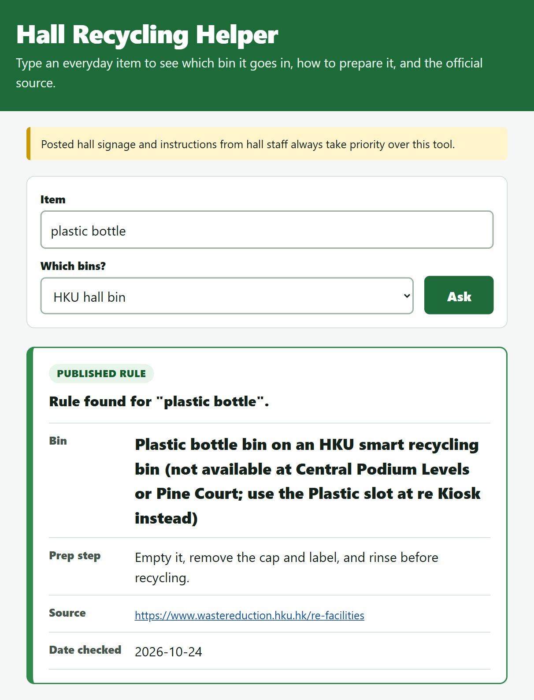
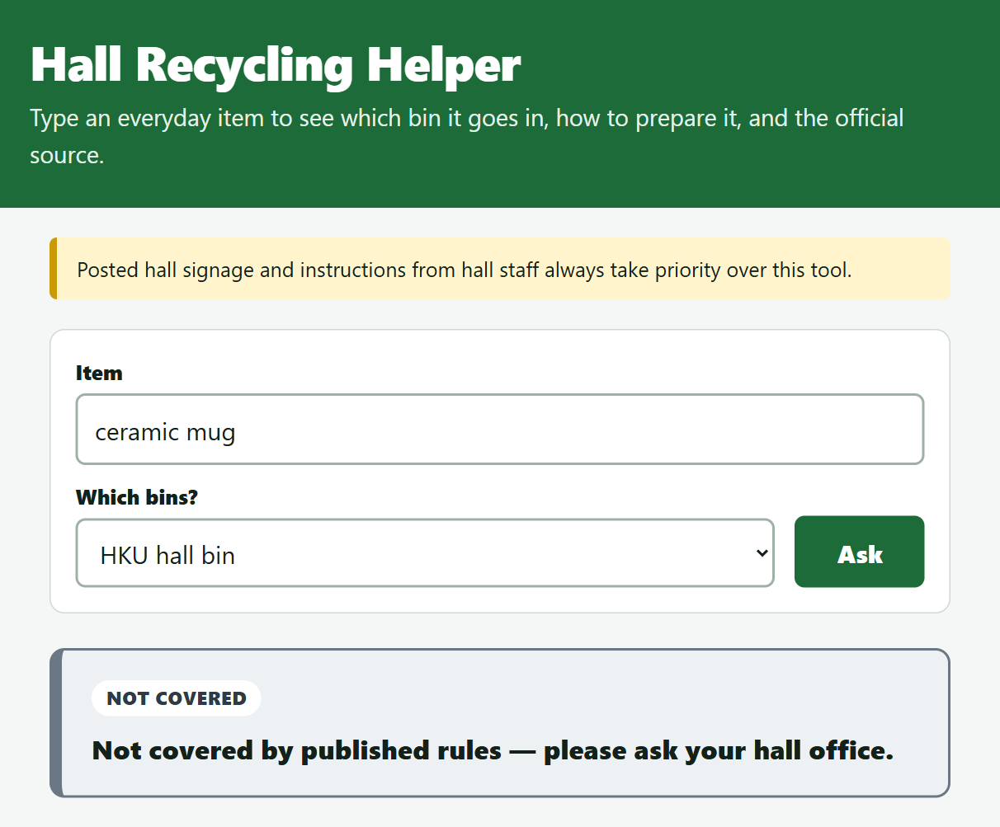
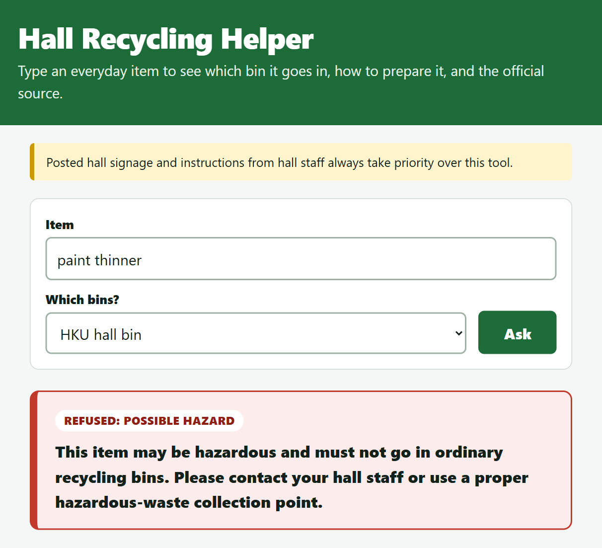

The problem
Two bin systems, rules scattered across image guides
HKU hall residents can recycle through HKU's smart recycling bins and re Kiosk, or through the Environmental Protection Department's (EPD) smart recycling bins. The two systems accept different things, and much of the official guidance is published as images and posters rather than searchable text.
Who it is for
HKU hall residents who want a quick, sourced answer to “where does this go?” for an everyday item, in either the HKU hall-bin context or the EPD smart-bin context.
What it will not do
It never invents a rule. Unknown items get “Not covered by published rules — please ask your hall office.” Possibly hazardous items are refused. Posted hall signage and instructions from hall staff always take priority over the tool.
How it works
From an item to a sourced answer
Every answer is copied from a published rule in the dataset. The language model only chooses approved wording, and anything it gets wrong falls back to the published text.
What we built vs existing tools
Our work, on top of standard parts
Built by the team
- The 43-rule dataset, hand-curated from official pages
- Hazard gate that runs before retrieval or any model call
- Context-scoped retrieval: exact and synonym match, optional embedding fallback, Hall > HKU > EPD priority
- LLM grounding with strict output validation and published-rule fallback
- The web form (a single static page)
- 58 regression tests, a 30-case evaluation runner and smoke tests
Existing tools we used
- FastAPI, Uvicorn and Pydantic for the web server and request validation
- An OpenAI-compatible chat API; the recorded live runs used
qwen3.8-flash - Python's standard library for HTTP calls to the model provider
Domain customisation
43 hand-curated rules, every one cited
Each rule gives a bin and preparation step for two contexts, HKU hall bins and EPD smart bins, each with its own official source URL and the date it was checked. Seven official pages are cited, from the HKU re Campaign, the EPD and the Hong Kong Government.
Same item, different answer
Plastic bottle, HKU hall bin: “Plastic bottle bin on an HKU smart recycling bin (not available at Central Podium Levels or Pine Court; use the Plastic slot at re Kiosk instead)”.
EPD smart bin: “Plastic bottles bin”.
Rejections are answers too
Many rules state what is not accepted, for example cookware or toothpaste tubes at re Kiosk, so residents get the published rejection instead of a guess.
No coverage, no answer
If a context has no published rule for an item, the app returns “not covered” for that context instead of borrowing an answer from the other system.
Real runs
Three requests through the running app
Screenshots from the app running locally in offline mode (no model credentials), so answers use the published-rule text. Watch the demo to see it running live.






Evaluation
30 fixed cases, run offline and twice against the live model
The suite in tests.csv has 20 covered item pairs across both contexts, 5 hazard refusals, 4 unknown or unsupported items and 1 published rejection. Expected answers were fixed before the live runs. Live runs used qwen3.8-flash on 18 November 2026, with embeddings not configured.
| Measure | Offline | Live run 1 | Live run 2 |
|---|---|---|---|
| Correct response content | 30/30 | 30/30 | 30/30 |
| Strict live pass (also requires a validated model answer) | not applicable | 29/30 | 29/30 |
| Validated LLM answers | not applicable | 20/21 eligible | 20/21 eligible |
| Source file | offline.json | live-run-1.json | live-run-2.json |
Also recorded: all 58 regression tests pass (unit-tests.txt), and a separate single-case live HTTP smoke test passed all 8 checks with validated model output (live-http-20261118T091526Z.json). Method and caveats: REPORT_NOTES_MMCHENG55.md.
Failure cases and limitations
Where it fell short, and what it does not cover
Recorded failure cases
- Provider timeouts. In each live run, one request to the model timed out under the 15-second limit: T30 (single-use battery, EPD) in run 1 and T12 (foam box, EPD) in run 2. Both returned the correct published-rule fallback, so the content was right but the strict live check failed.
- A wrong test expectation. The first offline pilot scored 29/30 because T30 wrongly expected “not covered”. The fixture was corrected before the live runs; app code and rules were unchanged.
Limitations
- No hall-level rules or bin-location hints. No HKU hall publishes recycling rules or recycling-bin locations that we could find, so Hall > HKU > EPD priority is tested only with synthetic fixtures.
- Live semantic retrieval is untested. No embedding model was configured. Only exact and synonym matching ran in the live evaluations.
- Live LLM status. Two 30-case live runs and one live HTTP smoke test were recorded on 18 November 2026. Two runs cannot establish general model reliability.
- The hazard gate is a keyword check. It can refuse harmless items that contain a hazard word (for example “paintbrush”), and it is not a full hazard classifier.
- Small, fixed test suite. It checks faithful delivery of the dataset, not accuracy on arbitrary queries, and not the truth of the source pages themselves.
Run it locally
Try it on your own computer
This page is a project showcase. The app itself is a small FastAPI server that you run locally. It works without any model credentials, using the published-rule text. From the repository folder (Python 3.10+):
py -m venv .venv # macOS/Linux: python3 -m venv .venv
.venv\Scripts\activate # macOS/Linux: source .venv/bin/activate
pip install -r requirements.txt
uvicorn app:app --reloadThen open http://127.0.0.1:8000. To run the tests:
pip install -r requirements-dev.txt
python -m unittest discover -s tests -vModel setup, the evaluation runner and more are in the README.
Team
Who made it
- Ekaterina AnufrievaRules dataset, UI
- Jiang ZitongRepository and environment
- Haha QiREADME and delivery checks
- Cheng Wai ChunRetrieval, LLM grounding, evaluation